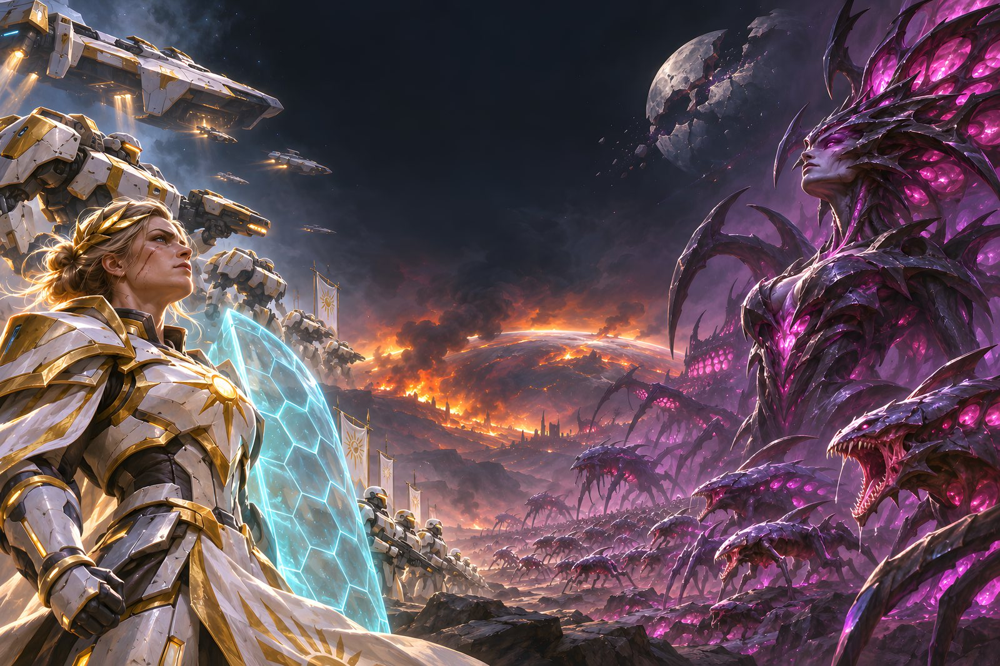
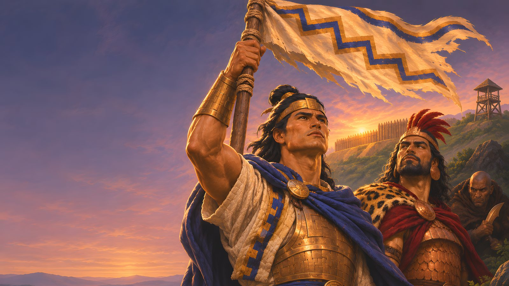

Nova Siege
Eight sci-fi armies fight over a dying universe. Four clans and their opposite twins, each with its own Commander, cards and battlefield.

FREE · NO ADS · NO ACCOUNTS
Command an army of cards. Battle the computer, or challenge another player online.
DOWNLOAD FOR WINDOWSVersion 0.3.0 · Windows 10 or 11 (64-bit) · about 1.5 GB · How to install
Eight sci-fi armies fight over a dying universe. Four clans and their opposite twins, each with its own Commander, cards and battlefield.

The same card battles in a world of ancient armies, painted by hand, with its own words, sounds and menus.
Online battles are hosted by the players themselves: one player hosts, the other joins. There are no servers running the game and no accounts to make.
Both players need the same version of the game. The game tells you when a new version is out.
To update, download the new zip and replace the old folder. Your saves are kept (they live in your user folder, not the game folder).